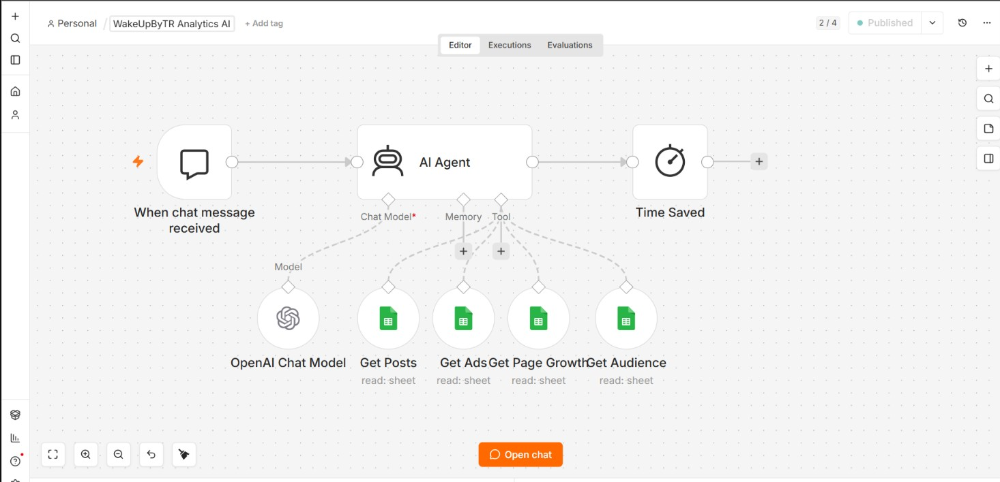
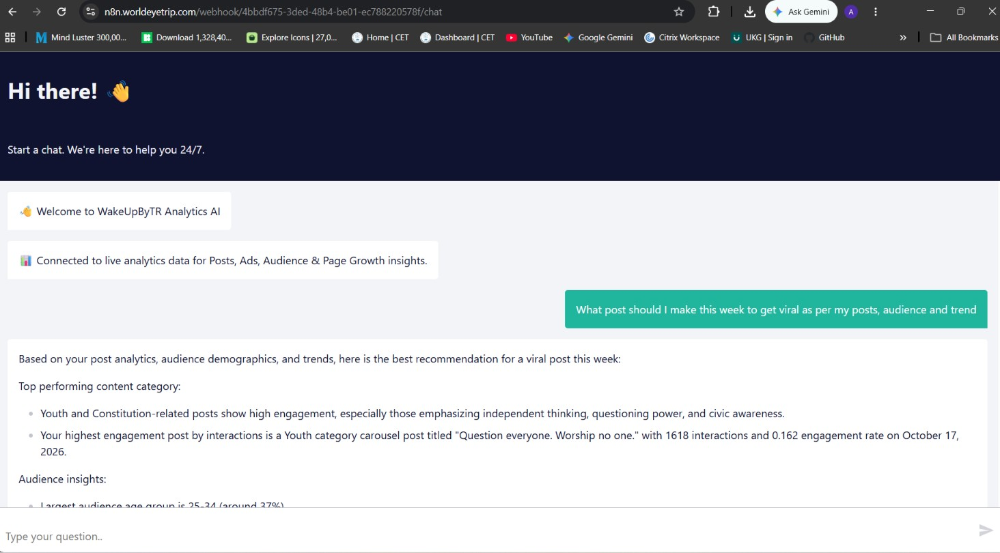

A conversational analytics proof of concept that lets a user ask natural-language questions about business
Instagram data stored in Google Sheets.
The solution is implemented as an n8n-led workflow using the integrations and logic described below. The
focus is to connect the input, processing steps and destination systems into a traceable flow. The agent
selects relevant spreadsheet tools based on the question and uses their returned data to formulate an
answer. This is a proof of concept for conversational self-service analytics.
02 / BUSINESS CONTEXT
The problem and objective
Analytics stored in multiple sheets can require manual searching and comparison. This proof of concept
explores a conversational interface for asking questions against those datasets.
Objective: Build a repeatable workflow that connects the relevant data or event to the
appropriate processing logic and records the result in the systems used by the team.
03 / IMPLEMENTATION SCOPE
What I implemented
Configure a chat trigger and AI Agent
connect the model
provide structured descriptions for five analytics sheet tools
retrieve relevant Posts, Ads, Audience and Page Growth information
test ranking, comparison and factual analytics questions
validate responses against the reporting sheets
04 / WORKFLOW ARCHITECTURE
How the workflow operates
The agent selects relevant spreadsheet tools based on the question and uses their returned data to
formulate an answer. This is a proof of concept for conversational self-service analytics.
01
Receive a natural-language question
The chat trigger receives a question from the user.
02
Interpret the request
The n8n AI Agent uses its connected model and structured tool descriptions to decide which
spreadsheet data is relevant.
03
Retrieve the source data
The agent can call the configured Google Sheets tools covering posts, ads, audience, page growth and
related analytics.
04
Compose a grounded response
The agent uses the tool output to answer factual questions or comparisons based on the available
sheets.
05
Validate the result
Responses should be checked against the source spreadsheet during the demonstration. This
implementation is a proof of concept.
DETAILED IMPLEMENTATION
What the workflow actually does
The agent selects relevant spreadsheet tools based on the question and uses their returned data to
formulate an answer. This is a proof of concept for conversational self-service analytics.
Implementation activities and workflow capabilities
Requirements research for conversational self-service analytics.
evaluation of Custom GPT, WhatsApp AI, Telegram and web assistant approaches.
assessment of static knowledge limitations for frequently updated reporting data.
n8n Chat Interface / Chat Trigger.
OpenAI model integration.
n8n AI Agent.
five Google Sheets tools.
structured sheet descriptions.
retrieval from Posts, Ads, Audience and Page Growth reporting data.
natural-language factual questions, rankings and comparisons.
response validation against dashboard sheets.
PoC implementation findings and future enhancement notes.
05 / SCREENSHOT EVIDENCE
Project screenshots
Replace these placeholders with genuine, sanitized screenshots from the actual project. Suggested evidence:
Chat interface, AI Agent node, connected sheet tools, sample question and execution.


06 / TECHNOLOGY STACK
Tools and integrations
n8n Chat Interfacen8n AI AgentOpenAI
modelGoogle Sheets tools
07 / SCOPE & STATUS
Implementation notes
Clearly label this as a PoC. Do not describe it as an enterprise-grade autonomous agent or imply
unsupported capabilities.
08 / BUSINESS VALUE
Why this automation matters
This system connects steps that would otherwise require people to move information manually between tools
or repeatedly check operational data. It provides a more structured and traceable process. The exact
operational impact depends on the team's usage, data quality and the workflow configuration; no unverified
performance or financial results are claimed here.